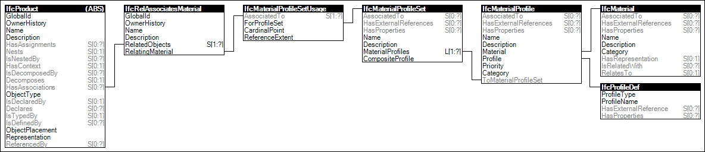

Link to this page
Link to this pageMaterial profile set usage defines layout at occurrences to indicate the offset from the 'Axis' reference curve according to cardinal point, and a reference extent such as for a default column height.
The concept of Material profile set usage is only applicable to certain product subtypes, refered to as "standard case" elements. It supports a certain range of parametric definitions for those element configurations.
The material of those standard case elements is defined by IfcMaterialProfileSetUsage and is attached by the IfcRelAssociatesMaterial.RelatingMaterial. It is accessible by the inverse HasAssociations relationship. Standard case elements with composite profiles can be represented by refering to several IfcMaterialProfile's within the IfcMaterialProfileSet that is referenced from the IfcMaterialProfileSetUsage.
Figure 23 illustrates an instance diagram.
 |
Figure 23 — Material Profile Set Usage |